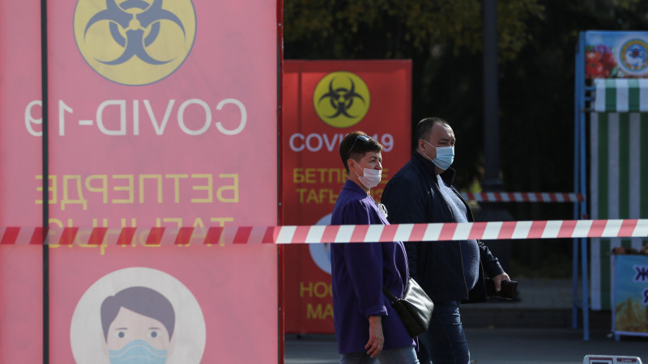
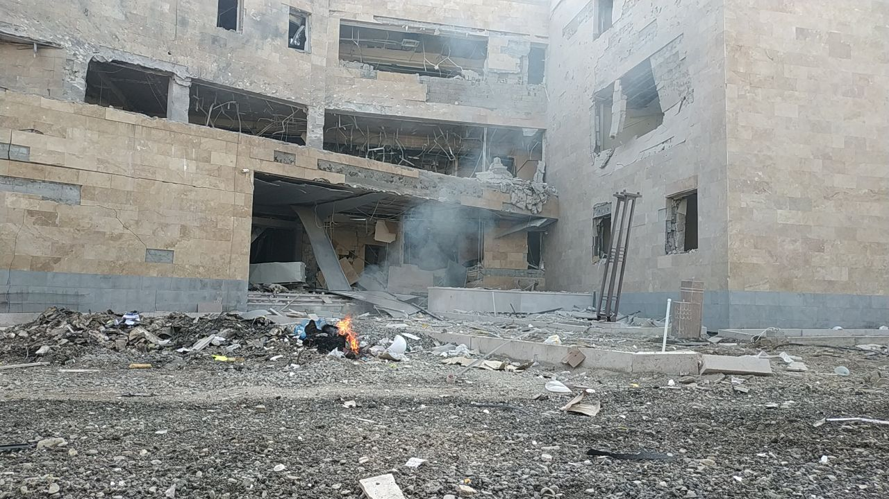
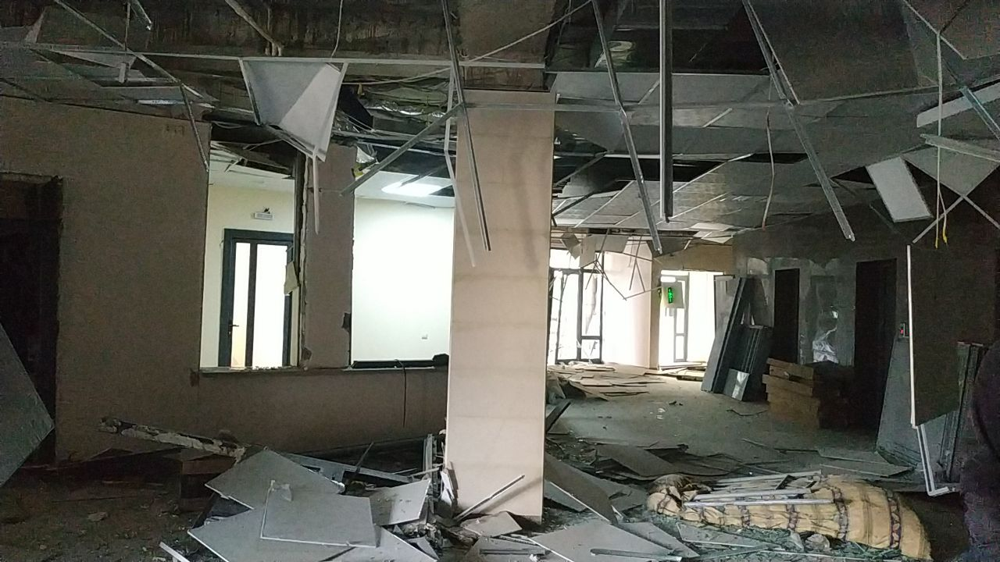

<DOCTYPE html>
</html>
<head>
  <script data-ad-client="ca-pub-8005032376770908" async src="https://pagead2.googlesyndication.com/pagead/js/adsbygoogle.js"></script>
  <link  href="20201102_195222.ico">
  <link rel="shortcut icon" href="favicon.png", type="image/png">
  <title>News Summer</title>
  <!-- Yandex.Metrika counter -->
<script type="text/javascript" >
   (function(m,e,t,r,i,k,a){m[i]=m[i]||function(){(m[i].a=m[i].a||[]).push(arguments)};
   m[i].l=1*new Date();k=e.createElement(t),a=e.getElementsByTagName(t)[0],k.async=1,k.src=r,a.parentNode.insertBefore(k,a)})
   (window, document, "script", "https://mc.yandex.ru/metrika/tag.js", "ym");

   ym(68829727, "init", {
        clickmap:true,
        trackLinks:true,
        accurateTrackBounce:true
   });
</script>
<noscript><div></div></noscript>
<!-- /Yandex.Metrika counter -->
  <!-- Global site tag (gtag.js) - Google Analytics -->
  <script async src="https://www.googletagmanager.com/gtag/js?id=GA_MEASUREMENT_ID"></script>
  <script>
  window.dataLayer = window.dataLayer || [];
  function gtag(){dataLayer.push(arguments);}
  gtag('js', new Date());

  gtag('config', 'GA_MEASUREMENT_ID');
</script>
  <script data-ad-client="ca-pub-4342048092732194" async src="https://pagead2.googlesyndication.com/pagead/js/adsbygoogle.js"></script>
  <link href = "style.css" rel = "stylesheet" type = "text /css">
</head>
<!-- Yandex.Metrika counter -->
<script type="text/javascript" >
   (function(m,e,t,r,i,k,a){m[i]=m[i]||function(){(m[i].a=m[i].a||[]).push(arguments)};
   m[i].l=1*new Date();k=e.createElement(t),a=e.getElementsByTagName(t)[0],k.async=1,k.src=r,a.parentNode.insertBefore(k,a)})
   (window, document, "script", "https://mc.yandex.ru/metrika/tag.js", "ym");

   ym(68829727, "init", {
        clickmap:true,
        trackLinks:true,
        accurateTrackBounce:true
   });
</script>
<noscript><div></div></noscript>
<!-- /Yandex.Metrika counter -->
<style>
   * {
     box-sizing: border-box;
     }
   body{
     color:white;
     font-size:30px;
     background-image: url(PicsArt_10-27-10.09.08.jpg);
     }  
    .row:after {
    visibility: hidden;
    display: block;
    font-size:9;
    content: " ";
    clear: both;
    height: 0;
    }
  .row { display: inline-block; }
  * html .row { height: 1%; }
  .row { display: block; }
  .header {
    color:orange;
    margin-bottom: 3px;
    }
  .inner-header {
   
    opacity: 0.9; 
    height: 200px;
    }
  .content{
    width: 71%;
    float: left;
    
   
    
    }
  .inner-content{
    background:#3d3c66;
    min-height:500px;
    }
  .sidebar{
    width: 29%;
    float: right;
    padding-left: 12px;
   
    }
  .inner-sidebar{
    color:white;
    background:#3d3c66;
    min-height: 500px;
    
    }
  .sidebartwo{
    width:25%;
    float:left;
    padding-left:10px;
    }
  .inner-sidebartwo{
    background:#3d3c66;
    min-height: 500px;
    }
  .footer {
    margin-top: 10px;
    background:#3d3c66;
    height: 100px;
    }
  .inner-footer{
    background:#FFF4ED;
    color:yellow;
    height:100px;
    weight:50px;
    }
  .contenttwo{
    width: 98%;
    float: left;
    }
  .inner-contenttwo{
    background:#3d3c66;
    min-height:500px;
    }
    
  .footer{
    color:white;
    background:#3d3c66;
    }
  .one {
 
  padding: 50px 20px;
  text-align: center;
}
.one h1 {
  font-family: 'Righteous', cursive;
  position: relative;
  color:#21044a; 
  display: inline-block;
  border-top: 2px solid;
  border-bottom: 2px solid;
  font-size: 3em;
  padding: 11px 60px;
  margin: 0; 
  line-height: 1;
}
.one h1:before, .one h1:after {
  content: ""; 
  position: absolute;
  top: 0;
  width: 30px;
  height: 100%;
  border-left: 2px solid;
  border-right: 2px solid;
  background: repeating-linear-gradient(180deg, transparent, transparent 2px, #3CA1D9 2px, #3CA1D9 4px);
}
.one h1:before {left: 0;}
.one h1:after {right: 0;}
@media (max-width: 420px) {
  .one h1 {font-size: 2em;}
}
  .six {
  background: #F7E2C7;
  padding: 50px 20px;
  text-align: center;
}
.six h1 {
  font-weight: normal;
  font-family: 'Merriweather', serif;
  position: relative;
  display: inline-block;
  margin: 0;
  line-height: 1;
  color: #F7844E;
  font-size: 40px;
  padding: .4em 1em .55em;
}
.six h1:before,
.six h1:after {
  content: ""; 
  position: absolute;
  width: 60%;
  height: .1em;
  background: #294200; 
}
.six h1:before {
  left: 0;
  top: 0;
}
.six h1:after {
  right: 0;
  bottom: 0;
}
.six h1 span:before,
.six h1 span:after {
  content: ""; 
  position: absolute;
  width: .65em;
  height: .65em;
  border: .1em solid #294200;
  border-radius: 50%;
  box-sizing: border-box;
}
.six h1 span:before {
  top: -.55em;
  left: -.325em;
}
.six h1 span:after {
  bottom: -.55em;
  right: -.325em;
}
@media (max-width: 600px) {
  .six h1 {font-size: 2em;}
}
@media (max-width: 450px) {
  .six h1 {font-size: 1.5em;}
}
  
  .button8 {
  display: inline-block;
  color: white;
  font-weight: 700;
  text-decoration: none;
  user-select: none;
  padding: .5em 2em;
  outline: none;
  border: 2px solid;
  border-radius: 1px;
  transition: 0.2s;
  position:relative;
} 
 
  .button8:hover { background: rgba(255,255,255,.2); }
  .button8:active { background: white; }
  .button{
    font-size:20px;
    background:#3d3c66;
  }
  .button7 {
  display: inline-block;
  color: white;
  font-weight: 700;
  text-decoration: none;
  user-select: none;
  padding: .5em 2em;
  outline: none;
  border: 2px solid;
  border-radius: 1px;
  transition: 0.2s;
} 
  .button9 {
  display: inline-block;
  color: white;
  font-weight: 700;
  text-decoration: none;
  user-select: none;
  padding: .5em 2em;
  outline: none;
  border: 2px solid;
  border-radius: 1px;
  transition: 0.2s;
  position:relative;
} 
 .button9:hover { background: rgba(255,255,255,.2); }
 .button9:active { background: white; }
.padding{
  }
  .button7
   button7:after {
   content: ' ';  //  Сюда мнемонику плюс можно поставить если хочешьu
   position: absolute ; // У кнопки position : relative ; нужно поставить
   top: 50%;
   left: 10px;
   bottom: auto;
   right: auto;
   transform: translateY(-50%);
   -webkit-transform: translateY(-50%);
   background: url('1603964428.jpg') no-repeat ; 
   width: 10px;
   height: 10px;
.photo{
  background-image: url(tass_42375411.8R1kI.jpg);
  }
</style>
<body>
<div class="wrapper">
<div class="header">
  <div class="inner-header">
    <div class="one"><h1>Новости осень</h1>
   
    </div>
    </div>
  <div class="sidebar">
    <div class="inner-sidebar">
      <h2>Погода</h2>
      <!-- weather widget start --><a target="_blank" href="https://nochi.com/weather/taldykorgan-59578"></a><!-- weather widget end --><!-- weather widget start --><a target="_blank" href="https://nochi.com/weather/almaty-10297"></a><!-- weather widget end -->
      <!-- weather widget start --><a target="_blank" href="https://nochi.com/weather/nur-sultan-11233"></a><!-- weather widget end --><!-- weather widget start --><a target="_blank" href="https://nochi.com/weather/thessaloniki-18520"></a><!-- weather widget end -->
      
      <!-- weather widget start --><a target="_blank" href="https://nochi.com/weather/sarkand-w111594"></a><!-- weather widget end --><!-- weather widget start --><a target="_blank" href="https://nochi.com/weather/moscow-18171"></a><!-- weather widget end -->
      
      <!-- weather widget start --><a target="_blank" href="https://nochi.com/weather/tomsk-17430"></a><!-- weather widget end --><!-- weather widget start --><a target="_blank" href="https://nochi.com/weather/omsk-17511"></a><!-- weather widget end -->
      
      <!-- weather widget start --><a target="_blank" href="https://nochi.com/weather/kaliningrad-16026"></a><!-- weather widget end --><!-- weather widget start --><a target="_blank" href="https://nochi.com/weather/saint-petersburg-18398"></a><!-- weather widget end -->
      
      <!-- weather widget start --><a target="_blank" href="https://nochi.com/weather/volgograd-17602"></a><!-- weather widget end --><!-- weather widget start --><a target="_blank" href="https://nochi.com/weather/voronezh-11237"></a><!-- weather widget end -->
      
      <!-- weather widget start --><a target="_blank" href="https://nochi.com/weather/ufa-17460"></a><!-- weather widget end --><!-- weather widget start --><a target="_blank" href="https://nochi.com/weather/pavlodar-56050"></a><!-- weather widget end -->
      
      <!-- weather widget start --><a target="_blank" href="https://nochi.com/weather/aktobe-17438"></a><!-- weather widget end --><!-- weather widget start --><a target="_blank" href="https://nochi.com/weather/karaganda-34753"></a><!-- weather widget end -->
      
      <!-- weather widget start --><a target="_blank" href="https://nochi.com/weather/uralsk-39678"></a><!-- weather widget end --><!-- weather widget start --><a target="_blank" href="https://nochi.com/weather/samara-1193"></a><!-- weather widget end -->

            <iframe style="width:100%;border:0;overflow:hidden;background-color:transparent;height:310px" scrolling="no" src="https://fortrader.org/informers/getInformer?st=1&cat=7&title=%D0%9A%D1%83%D1%80%D1%81%D1%8B%20%D0%B2%D0%B0%D0%BB%D1%8E%D1%82%20%D0%A6%D0%91%20%D0%A0%D0%A4&texts=%7B%22toolTitle%22%3A%22%D0%92%D0%B0%D0%BB%D1%8E%D1%82%D0%B0%22%2C%22todayCourse%22%3A%22%22%7D&mult=1&showGetBtn=0&hideHeader=0&hideDate=0&w=0&codes=1&colors=false&items=2%2C21%2C30%2C11111&columns=todayCourse&toCur=27"></iframe>
       
        <a href="new.html" class="button8">Статьи</a>
        
        
        <a href="goroskop.html" class="button7">Гороскоп</a>
       
         
    
    
    </div>
  
    <div class="footer"> 
      Тех.поддержка-brizanovtimur@g
      mail.com
    
    </div>
  </div>
</div>
  <div class="container row">
    <div class="content">
      <div class="inner-content">
        <h2>Новости за 12 ноября</h2>
        <a href="index.html" class="button7">Все</a><a href="Y12.html.html" class="button7">Утро</a><a href="D12.html.html" class="button7">День</a><br>       
        <a href="News12.html" class="button7"><time>9:57</time><br>Колонна миротворцев из России прибыла в армянский Горис<br><br>Читать далее</a>
        <a href="News13.html" class="button7"><time>9:58</time><br>Экс-кандидат в президенты США Сандерс готов работать в администрации Байдена<br><br>Читать далее</a>
        <a href="News14.html" class="button7"><time>10:07</time><br>Клайн принял предложение Байдена возглавить аппарат Белого дом<br><br>Читать далее</a>
        </div>
       </div>
    <div class="content">
      <div class="inner-content">
        <h2>Новости за 11 ноября</h2>
        <a href="index.html" class="button7">Все</a><a href="11.html" class="button7">Утро</a><a href="11den.html" class="button7">День</a><br>       
        <a href="Newsone.html" class="button7"><time>10:02</time><br>Помпео призвал не спешить с вопросами о работе Госдепа с командой Байдена<br><br>Читать далее</a>
        <a href="Newstwo.html" class="button7"><time>10:06</time><br>Миротворцы из России выдвинулись в зону нагорно-карабахского конфликта<br><br>Читать далее</a>
        <a href="news3.html" class="button7"><time>10:34</time><br>Губернатор Камчатки заразился коронавирусом<br><br>Читать далее</a>
        <a href="news4.html" class="button7"><time>10:42</time><br>Белый дом призвал ведомства готовить предложения по новому бюджету<br><br>Читать далее</a>
       </div>
      </div>
    <div class="content">
      <div class="inner-content">
        <h2>Новости за 10 ноября</h2>
        <a href="index.html" class="button7">Все</a><a href="ytrechko.html" class="button7">Утро</a><a href="denek.html" class="button7">День</a><br>       
        <a href="mir.html" class="button7"><time>5:45</time><br>Российские миротворцы начнут развертывание в Карабахе в 6:00<br><br>читать далее....</a>
        <a href="kanal.html" class="button7"><time>9:39</time><br>Канал Fox прервал показ выступления пресс-секретаря Белого дома<br><br>читать далее...</a>
        <a href="pre.html" class="button7"><time>9:50</time><br>Президент НКР объяснил согласие прекратить войну с Азербайджаном<br><br>Читать далее...</a>
        </div>
      </div>
    <div class="content">
      <div class="inner-content">
        <h2>Новости за 9 ноября</h2>
        <a href="index.html" class="button7">Все</a><a href="y.html" class="button7">Утро</a><a href="de.html" class="button7">День</a><br>       
        <a href="Biden.html" class="button7"><time>10:30</time><br>Байден намерен ввести в США масочный режим</a>
        <a href="Kit.html" class="button7"><time>10:38</time><br>Российско-китайский хоккейный матч на реке Амур отменен из-за COVID-19</a>
        <a href="zem.html" class="button7"><time>10:44</time><br>Землетрясение магнитудой 4,6 произошло на севере Сахалина</a>
        <a href="mn.html" class="button7"><time>10:50</time><br> республиканцев в вопросе признания итогов выборов разделились</a>
        <a href="pr.html" class="button7"><time>13:38</time><br>Причиной стрельбы в воронежской части назван конфликт с офицером<br><br>Читать далее...</a>
        </div>
      </div>
     <div class="content">
      <div class="inner-content">
        <h2>Новости за 8 ноября</h2>
        <a href="index.html" class="button7">Все</a><a href="Ytrofive.html" class="button7">Утро</a><a href="denfive.html" class="button7">День</a><br>       
        <a href="Am.html" class="button7"><time>10:59</time><br>Американские телеканалы заявили о победе Байдена на выборах президента</a>
        <a href="str.html" class="button7"><time>11:15</time><br>Сторонники Трампа проводят демонстрации протеста по всей стране</a>
        <a href="red.html" class="button7"><time>11:28</time><br>Красной нитью обращения Байдена к нации будет призыв к единству нации</a>
        </div>
      </div>
    <div class="content">
      <div class="inner-content">
        <h2>Новости за 7 ноября</h2>
        <a href="index.html" class="button7">Все</a><a href="ytr.html" class="button7">Утро</a><a href="dear.html" class="button7">День</a><br>       
        <a href="v.html" class="button7"><time>9:57</time><br>В Неваде осталось обработать более 120 тысяч избирательных бюллетеней</a>
        <a href="sud.html" class="button7"><time>10:05</time><br>Суд в США постановил отделить в Пенсильвании бюллетени, полученные после выборов</a>
        <a href="d.html" class="button7"><time>10:13</time><br>В Джорджии намерены пересчитать голоса на выборах президента США</a>
        <a href="kr.html" class="button7"><time>17:48</time><br> В крупных городах Грузии введут комендантский час из-за COVID-19</a>
        </div>
      </div>
    <div class="content">
      <div class="inner-content">
        <h2>Новости за 6 ноября</h2>
        <a href="index.html" class="button7">Все</a><a href="ytrocho.html" class="button7">Утро</a><a href="dencho.html" class="button7">День</a><br>       
        <a href="poch.html" class="button7"><time>11:02</time><br>Почта США не доставила ко дню выборов 150 тыс. бюллетеней</a>
        <a href="of.html" class="button7"><time>11:18</time><br>Офис спецпрокурора расследует использование предвыборным штабом Трампа ресурсов Белого дома</a>
        <a href="Art.html" class="button7"><time>06:42</time><br>Артистка Вертинская и замгендиректора Эрмитажа награждены Орденами Александра Невского</a>
        <a href="Three.html" class="button7"><time>12:59</time><br>Трое пострадавших в аварии в центре Москвы остаются в больницах</a>
        <a href="ch.html" class="button7"><time>13:09</time><br>Почти 470 медиков заразились COVID-19 за сутки на Украине</a>
        <a href="r.html" class="button7"><time>16:15</time><br>Ряд американских СМИ прервали прямую трансляцию брифинга Трампа</a>
        <a href="ros.html" class="button7"><time>20:51</time><br>Росгосцирку выделили 150 млн руб. из резервного фонда на корм животным</a>
        </div>
      </div>
    <div class="content">
      <div class="inner-content">
        <h2>Новости за 5 ноября</h2>
        <a href="index.html" class="button7">Все</a><a href="ytrothree.html"  class="button7">Утро</a><a href="denthree.html"  class="button7">День</a><br>
        <div class="photo">
        <a href="Foxy.html" class="button7"><time>10:25</time><br>Fox сообщил, что данные по выборам в Неваде не появятся раньше утра четверга</a>
        <a href="br.html" class="button7"><time>18:47</time><br>BP собралась продать штаб-квартиру в Лондоне за 250 млн фунтов</a>
        <a href="f.html" class="button7"><time >16:34</time><br>В московский офис ФБК пришли с обысками</a>
        <a href="Pod.html" class="button7"><time>12:32</time><br>Подростки из Бурятии с игрушечным пистолетом напали на ювелирный салон в Иркутске</a>
        </div>
      </div>
      </div>
    <div class="content">
      <div class="inner-content">
        <h1>Новости за 4 ноября</h1>
        <a href="index.html" class="button7">Все</a><a href="ytrotwo.html"  class="button7">Утро</a><a href="dentwo.html"  class="button7">День</a><br>
        <a href="Fox.html" class="button7"><time>8:42</time><br>Fox News назвал Байдена лидером президентской гонки во Флориде</a>
        <a href="Pob.html" class="button7"><time>11:26</time><br>Победа в Калифорнии приносит Байдену 55 голосов выборщиков</a>
        <a href="it.html" class="button7"><time>16:10</time><br>В Италии введут режим ЧП из-за ситуации с коронавирусом</a>
        <a href="Sh.html" class="button7"><time>16:00</time><br>Штаб Байдена возмутили слова Трампа о подсчете голосов</a>
        <a href="Put.html" class="button7"><time>20:54</time><br>Путин напомнил о старании РФ установить мир между Ереваном и Баку</a>
        <a href="V.html" class="button7"><time>21:03</time><br>Взрыв аккумулятора электроскутера привел к пожару в доме в Москве</a>
      </div>
    </div>
    <div class="content">
      <div class="inner-content">
        <h1>новости за 3 ноября</h1>
        <a href="index.html" class="button7">Все</a><a href="ytroone.html"  class="button7">Утро</a><a href="denone.html"  class="button7">День</a><br>
        <a href="Pol.html" class="button7"><time>02:19</time>Полиция нейтрализовала одного из нападавших в Вене</a>
        <a href="Ter.html" class="button7"><time>03:46</time><br>Не менее 15 человек пострадали в результате теракта в Австрии</a>
        <a href="Dva.html" class="button7"><time>05:05</time><br>Число жертв в результате нападений в Вене выросло до двух</a>
        <a href="G.html" class="button7"><time>00:13</time><br>Глава МВД Австрии назвал стрельбу в Вене терактом</a>
        <a href="P.html" class="button7"><time>12:46</time><br>Палата представителей США готова выбрать президента при спорном голосовании</a>
        <a href="I.html" class="button7"><time>15:46</time><br>Экскурсионный катер затонул у берегов Антальи в Турции</a>
      </div>
    </div>
   <div class="content">
     <div class="inner-content">
       <h2>Новости за 2 ноября</h2>
       <a href="index.html" class="button7">Все</a><a href="Ytro.html"  class="button7">Утро</a><a href="den.html"  class="button7">День</a><br>
       <a href="Yil.html" class="button7"><time>06:01</time><br>принц Уильям заразился COVID-19</a>
       <a href="baidan.html" class="button7"> <time>03:12</time><br>Байден заявил, что Трампу не удастся украсть выборы</a>
       <a href="kam.html" class="button7"> <time>00:52</time><br> Жители Камчатки ощутили пятибалльное землетрясение </a>
       <a href="N.html" class="button7"><time>8:32</time><br>В Новосибирске будут судить "коллекторов", пугавших людей похоронными венками</a>
       <a href="Trump1.html" class="button7"><time>12:34</time><br>Трамп не исключил увольнения главного инфекциониста США после выборов</a>
       <a href="Dem.html" class="button7"><time>14:07</time><br>Более 80 экспертов заявили о кризисе демократии в мире</a>
       <a href="mvd.html" class="button7"><time>15:33</time><br>МВД попросило суд арестовать экс-гендиректора "ТНС энерго" Аржанова</a>
         </div>
  </div>
   <div class="content">
     <div class="inner-content">
       <h2>Новости за 1 ноября</h2>
       <h2> Первый рейс из берлинского аэропорта-долгостроя вылетит в воскресенье в Лондон   </h2>
       <h3>Первый самолет из нового аэропорта Берлин-Бранденбург имени Вилли Брандта отправится в воскресенье утром в Лондон, свидетельствует расписание.

Рейс выполняет авиакомпания Easyjet, самолет приземлится в лондонском аэропорту Гатвик. Будет использована старая взлетно-посадочная полоса аэропорта Шенефельд, на базе которого строился новый. С понедельника рейсы будут выполняться с новой ВПП и из нового терминала.

Из-за пандемии коронавируса и ограничений на путешествия в ближайшие время аэропортом будут пользоваться лишь несколько тысяч пассажиров в день. По информации газеты Morgenpost, по этой причине аэропорт несет большие убытки. Скептически настроенные эксперты опасаются, что предприятие многие годы будет требовать федеральных дотаций, хотя на саму стройку уже ушло 6 миллиардов евро.

Аэропорт стал самым знаменитым немецким долгостроем за последние годы. До начала пандемии предполагалось, что оттуда будут выполняться рейсы в более 150 точек Земли. Открытие неоднократно переносилось: вначале оно планировалось на 2011 год, потом на 2012 и так далее. В общей сложности комплекс строился более 14 лет.

Предполагается, что новый аэровокзал заменит два других - "Шёнефельд" и "Тегель", относительно небольшие аэропорты старого образца и с устаревшей инфраструктурой. "Тегель" планируют закрыть для пассажирской авиации 8 ноября, а "Шенефельд" будут использовать в качестве одного из терминалов нового аэропорта.

Изначально переносить дату открытия пришлось из-за проблем с противопожарной безопасностью, недостатков системы воздуховодов и противопожарной защиты.   </h3>
       <h2> Более 50 тысяч жителей Дагестана остались без света из-за энергоаварии  </h2>
       <h3> Аварийно-восстановительные работы ведутся в Кумторкалинском районе Дагестана, где из-за аварийного отключения линии электропередачи более 50 тыс. человек остались без света, сообщается на сайте Минэнерго РФ.

"31 октября в 22:06 мск отключилась воздушная линия "Артем - Шамхал". Без электроснабжения осталась часть бытовых потребителей Кумторкалинского района Дагестана - около 51 тыс. человек. Мощность отключенных потребителей - 21 МВт. Ведутся аварийно-восстановительные работы", - говорится в сообщении.

В свою очередь в пресс-службе ПАО "Россети Северный Кавказ" "Интерфаксу" уточнили, что отключение электроснабжения произошло в зоне ответственности "Дагэнерго" в Кумторкалинском и Новолакском районах Дагестана.

"Оперативно-выездная бригада компании уже приступила к восстановительным работам. Энергетики намерены вернуть свет в дома потребителей в самые короткие сроки. Персонал, задействованный в работах, обеспечен необходимыми средствами индивидуальной защиты", - сказал собеседник агентства.  </h3>
     </div>
  </div>
    <div class="content">  
      <div class="inner-content">
        <h2>Новости за 31 октября</h2>
        <h3> Количество выявленных случаев заражения коронавирусом в мире превысило в пятницу 45 млн. Об этом свидетельствуют данные, опубликованные на сайте американского Университета Джонса Хопкинса, который ведет подсчеты на основе информации международных организаций, федеральных и местных властей, передает ТАСС. По его сведениям, число инфицированных сейчас составляет 45 018 354, умерли 1 181 027 человек, выздоровели 30 298 756. Больше всего случаев заражения зафиксировано в США (8 944 934). Далее следуют Индия (8 088 851) и Бразилия (5 494 376). В России, по данным федерального оперативного штаба по борьбе с коронавирусом, зарегистрировано 1 581 693 случая заражения, выздоровел 1 186 041 человек, умер 27 301. Другие материалы в этой категории: « Особый режим из-за COVID-19 могут продлить до мая в Испании В 16 регионах РФ критическая ситуация с коечным фондом для пациентов с COVID-19 »
</h3>
        <h2>  Несанкционированная акция в поддержку Фургала началась в Хабаровске  </h2>
        <h3>  Жители Хабаровска вновь вышли на площадь имени Ленина в центре города на несанкционированную акцию в поддержку бывшего губернатора региона Сергея Фургала, передал корреспондент "Интерфакса" в субботу.

По данным администрации города, в акции принимают участие около 300 человек. После небольшого митинга на площади участники акции выдвинулись шествием по центральным улицам города, скандируя лозунги с критикой власти и в поддержку бывшего губернатора.

По информации мэрии, после каждой акции количество штрафов, выписанных в отношении ее участников, увеличивается.

"За время проведения несанкционированных публичных мероприятий в поддержку экс-губернатора края, арестованного по подозрению в совершении особо тяжких преступлений, на территории Хабаровского края пресечено 353 административных правонарушения", - говорится в сообщении мэрии.

По результатам рассмотрения дел судами принято 339 решений: выписано штрафов на сумму около 2,5 млн рублей, 53 административных ареста, 37 приговорены к обязательным работам. Сотрудниками ГИБДД владельцам транспортных средств вручено 2 тыс. предостережений о недопустимости участия в несогласованных мероприятиях.

О задержании Фургала Следственный комитет сообщил в ночь на 9 июля. По версии следствия, он организовал покушение на убийство предпринимателя и убийства еще двух бизнесменов в 2004-2005 годах. Фургалу предъявлено обвинение в организации убийств по найму и в покушении на убийство (ч. 2 ст. 105 УК РФ и ст. 30, ст. 33 ч. 2 ст. 105 УК РФ).

20 июля президент России Владимир Путин подписал указ об отрешении Фургала от должности губернатора Хабаровского края в связи с утратой доверия. Врио главы региона назначен представитель ЛДПР, депутат Госдумы Михаил Дегтярев. </h3>
      </div>
    </div >
    <div class="content">
      <div class="inner-content">
        <h2>Новости за 30 октября</h2>
        <h2>"Газпром" обогнал "Роснефть" по уровню рыночной капитализации  </h2>
        <h3>Рыночная капитализация "Газпрома" достигла 3,666 трлн рублей, и эта компания поднялась на второе место в России по капитализации, следует из данных Московской биржи. Со второй позиции "Газпром" потеснил "Роснефть", капитализация которой снизилась до 3,66 трлн рублей.

Смена позиций в рейтинге по уровню рыночной капитализации на российском фондовом рынке произошла за счет более активного падения акций "Роснефти" (-1,8% к уровню закрытия четверга) по сравнению с бумагами "Газпрома" (-0,4%) на фоне обвального снижения нефтяных цен, наблюдаемого в последние дни.

В свою очередь давление на нефтяной рынок оказывает рост добычи в Ливии, который совпал по времени со второй волной коронавируса в Европе и США. Стоимость декабрьских фьючерсов на нефть Brent на лондонской бирже ICE Futures в пятницу утром опустилась до $37 за баррель (минимального значения с конца мая).</h3>
        <h2>Прокурор Франции подтвердил личность напавшего на церковь в Ницце</h2>
<h3>У совершившего тройное убийство в четверг ,в базилике Нотр-Дам в Ницце найдено свидетельство итальянского "Красного Креста", нападавший - выходец из Туниса 1999 года рождения, сообщил прокурор по антитеррористическим расследованиям Жан-Франсуа Рикар.

"Это удостоверение действительно принадлежит нападавшему", - подтвердил прокурор на пресс-конференции.

Террорист въехал в Италию через остров Лампедуза 20 сентября.

Ни полиции, ни спецслужбам не были известны его отпечатки пальцев.

При задержании он был тяжело ранен и доставлен в госпиталь. Его жизнь пока находится под угрозой.

По месту проживания террориста были найдены коран, два мобильных телефона и нож. После его задержания в церкви обнаружили сумку, принадлежавшую напавшему на прихожан с ножом, в которой находились еще два ножа.

В четверг утром вооруженный ножом мужчина убил трех человек в церкви Нотр-Дам в Ницце. Нападавший получил огнестрельное ранение во время задержания. Во время оказания ему срочной медицинской помощи он повторял "Аллах Акбар".</h3>
        </div>
      </div>
  <div class="content">
    <div class="inner-content">
    
      <div class="padding">
        
      <h2>Новости за 29 октября</h2>
       </div>
      <h3>    </h3>
      <h2>Резкий прирост новых случаев коронавируса зафиксирован в Казахстане</h2>
      
      <h3> За прошедшие сутки (по данным на 28 октября) в Казахстане зарегистрировано 268 новых случаев заболевания коронавирусной инфекцией</h3>
      <h3>  Это почти вдвое больше, чем 27 октября, когда было зафиксировано 148 случаев коронавируса.  

Всего в стране подтверждено 111 100 случаев, из них:

в городе Алматы - 14 693 (+12),

в городе Нур-Султане - 14 510 (+33),

в Атырауской области - 11 270 (+4),

в Карагандинской области - 10 532 (+10),

в ВКО - 9360 (+139),

в ЗКО - 6992 (+9),

в городе Шымкенте - 5231 (+2),

в Алматинской области - 5112 (+5),

в СКО - 4400 (+13),

в Павлодарской области - 4196 (+12),

в Жамбылской области - 4180 (+3),

в Акмолинской области - 3664 (+10),

в Костанайской области - 3608 (+7),

в Туркестанской области - 3409 (+1),

в Мангистауской области - 3391 (+0),

в Актюбинской области - 3293 (+2),

в Кызылординской области - 3259 (+6).

За тот же период в республике от коронавирусной инфекции выздоровели 176 человек.

в городе Нур-Султан - 34,
в городе Алматы - 15,
в городе Шымкент - 23,
в Акмолинской области - 26,
в Актюбинской области - 5,
в Атырауской области - 4,
в ВКО - 13,
в ЗКО - 17,
в Карагандинской области - 21,
в Костанайской области - 7,
в Павлодарской области - 5,
в Северо-Казахстанской области - 6.

Всего в стране выздоровели 106 059 человек от COVID-19 </h3>
      <h3> Российский турист скончался в турецкой Анталье от коронавируса, сообщили порталу "Интерфакс-Туризм" в генеральном консульстве РФ в городе.

"Генконсульство подтверждает факт смерти российского туриста 1960 г.р. в результате заражения COVID-19. В координации с местными властями и страховой компанией предпринимаются необходимые шаги для репатриации тела. Вопрос об оплате задолженности за лечение и транспортировку тела на родину урегулирован", - сказали в генконсульстве.

Там уточнили, что турист прибыл в Анталью 25 сентября.

Ранее СМИ сообщили о смерти 60-летнего россиянина, который вместе с женой приехал отдыхать на курорте Сиде в Анталье. Коронавирус у него был обнаружен спустя неделю.

Россия возобновила прямые рейсы в Анталью, Даламан и Бодрум 10 августа. Всего с начала года Анталью посетили более 1,2 млн россиян.

По состоянию на 29 октября, в Турции зарегистрировано 369 тыс. случаев COVID-19 и 10 тыс. смертей. Ежедневный прирост новых случаев составляет около 2,3 тыс.   </h3>
      <h3>Топ  оригинальных и практичных зарядных устройств</h3>
      
      <h3>Handgrip Charger от дизайнера Mac Funamizu преобразует кинетическую энергию от размахивания клюшкой для гольфа в электрическую энергию для зарядки смартфона. Кроме того, Handgrip записывает движения клюшки. Специальное приложение на смартфоне проана</h3>
      
      <h3> Зарядное устройство на биологическом топливе от Jun Hyuck Choi, Jooyeon Kim и Sungi Kim использует биоэтанол. Технология получения электричества из биоэтанола вполне осуществима, но прототип устройства еще не создан.</h3>
      <h3>Напишите ваше мнение об даннои статье в комментаряих</h3>
      <div id="sigCommentsBlock"></div>
 <a href="http://sigcomments.com" style="font-size: 0.6em;"></a>
 <script type="text/javascript">
  (function(){
   var host_id = '4669';
   var script = document.createElement('script');
   script.type = 'text/javascript';
   script.async = true;
   script.src = '//sigcomments.com/chat/?host_id='+host_id;
   var ss = document.getElementsByTagName('script')[0]; 
   ss.parentNode.insertBefore(script, ss);
  })();
 </script>
    </div>
    </div>
  <div class="content">
    <div class="inner-content">
     <h3>Новости за 28 октября </h3>
      <h3>Утренние новости</h3>
      <h3>Что случилось этой ночью: среда, 28 октября</h3>
      <h3> Краткая сводка событий, произошедших к утру:

– Режим обязательного ношения медицинских масок начался в России. Носить маски положено в общественных местах. Общественными местами считаются любые пространства в помещениях и на улице, где может находиться более 50 человек.

– Более 500 уголовных дел за организацию беспорядков завели в Белоруссии. Следственный комитет отметил радикализацию протестов. Милиция проверит всех заявителей на сотрудников правопорядка.

– Режиссер Роман Виктюк госпитализирован из-за коронавируса. Он восстанавливается после заражения. Сегодня Виктюку исполнилось 84 года.

– Бартомеу покинул пост президента ФК "Барселона". Остальные члены совета директоров покинут свои посты. Бартомеу работал президентом клуба с 2014 года.

– "Локомотив" проиграл "Баварии" в Лиге чемпионов УЕФА. "Бавария" дважды выходила вперед в матче. Немецкий клуб закрепился на первом месте в группе А Лиги чемпионов, а "Локомотив" оказался на третьем.</h3>
    <h3>Обеденные новости<h3>
      <h3>Перепись родников провели в Алтайском крае</h3>
      
      <h3>Участники проекта "Чистые родники Алтая" составили экологические паспорта для 210 родников в Алтайском крае, сообщает пресс-центр краевого правительства.

Проект проводился Алтайским краевым отделением Русского географического общества при поддержке Фонда президентских грантов, сказано в сообщении. Важным направлением проекта стало вовлечение общественников в изучение, обустройство и сохранение родников. В течение года участники проекта занимались сбором информации. В ходе экспедиционных исследований они уточнили и дополнили данные о географическом положении родников, провели их экологическую паспортизацию. Для 40 родников специалисты сделали анализ макрокомпонентного химического состава. Участники проекта обустроили и расчистили 25 родников.

"Санитарное и техническое состояние родников края разное: от благоустроенных каптажей до примитивных устройств в виде выводной трубы. Около 80% обследованных родников нуждается в реконструкции каптажа и защите от загрязнения, у большинства источников подземных вод отсутствуют зоны санитарной охраны. Главный аргумент в пользу необходимости продолжения работ по проекту - неравнодушное отношение к родникам жителей и гостей края", - отметила координатор проекта "Чистые родники Алтая" Ирина Архипова, слова которой приведены в сообщении.

Всего в рамках проекта в крае провели 11 эколого-просветительских мероприятий, три из них - дистанционно. Также в рамках проекта организовали семинар, четыре конкурса, девять выездных полевых занятий. Специалисты также разработали курс "Занимательная гидрогеология". Его материалы размещены на образовательном портале Алтайского краевого отделения Русского географического общества.</h3>
      <h3>Ночные новости</h3>
      <h3>ВС Азербайджана бросили авиабомбу на Республиканскую больницу в Степанакерте, прямо на здание роддома.</h3>
      
      
     
      
      </div>
  </div>
  <div class="content">
    <div class="inner-content">
      <h3>новости за 27октября</h3>
      <h3>утренние новости</h3>
      <h3>  В Роспотребнадзоре допустили ухудшение ситуации с COVID-19 в феврале—марте. В ведомстве полагают, что к летним показателям Россия вернется ближе к лету 2021 года. Накануне, 26 октября, в стране был установлен очередной рекорд по числу выявленных за сутки новых случаев заражения. О пандемии в России</h3>

<h3>Глава МИД РФ Сергей Лавров прокомментировал решение ЕС ввести санкции в отношении россиян в связи с предполагаемым отравлением политика Алексея Навального. По словам дипломата, Брюссель «взял за правило разговаривать с Россией с позиции презумпции ее виновности во всем», а само «дело Навального» показывает неспособность ЕС адекватно оценить происходящее в мире.</h3> <h2>О санкциях</h2>

Сегодня, 27 октября, коллегии Минобороны РФ и Белоруссии обсудят подготовку к совместным стратегическим учениям «Запад-2021». Последние раз совместные стратегические учения «Запад» страны проводили в 2017 году. Тогда в маневрах приняли участие около 13 тыс. военных.</h3>
    <h2>обеденные новости</h2>  
    <h3>Мэрия сообщила о росте зарплат врачей и учителей Москвы почти в 3 раза</h3>
    <h3>  Зарплаты учителей с 2010 года в Москве выросли в 3 раза,   врачей в 2,7 раза, среднего медицинского персонала - в 2,2 раза, сообщил заммэра столицы по вопросам экономической политики и имущественно-земельных отношений Владимир Ефимов журналистам во вторник.

"За 9 месяцев текущего года средняя зарплата учителя в Москве составила 116,9 тыс. рублей, врача 156,4 тыс. рублей, среднего медицинского персонала 91,9 тыс. рублей", - уточнил Ефимов.

В свою очередь глава департамента экономической политики и развития города Кирилл Пуртов пояснил, что рост расходов городского бюджета на заработную плату учителей и медиков - "отражение важности этих профессий для города".

"В сравнении с 2010 годом бюджетные ассигнования на зарплату московских учителей выросли в 2,2 раза, на зарплату врачей в 2 раза, на зарплату среднего медицинского персонала - в 1,2 раза", - сказал Пуртов.

 </h3>
      <h3>На проспекте Абая в Алматы вырубят 47 деревьев, которые признали высохшими и потерявшими вид</h3>
      <h3> В Алматы на проспекта Абая вырубят 47 деревьев. Их признали на этом участке "аварийными" и высохшими, сообщили в управлении зелёной экономики города.

Дендрологи и общественники изучили состояние деревьев на разделительной полосе дороги на проспекте Абая от проспекта Достык до улицы Байтурсынова. Здесь растут 306 деревьев:

хвойных – 254;лиственных – 26;плодовых – 24;кустарники – 2.

Специалисты осмотрели их. Выяснилось, что часть из них высохла. В связи с этим, комиссия постановила разрешить вырубку деревьев, которые находятся в неудовлетворительном состоянии. Из 306 вырубят 47, а на другие участки пересадят 23 дерева.

Зелёные насаждения на разделительной полосе проспекта Абая в последнее время потеряли свой эстетический и декоративный вид. Высаживалось на этом участке всё хаотично: есть и хвойные и лиственные и плодовые деревья, отметил член рабочей группы, руководитель сектора защиты леса и зеленых насаждений института защиты карантина растений Нуржан Мухамадиев.

"Дело в том, что на проспекте Абая загруженная проезжая часть, там очень много транспорта, а это выхлопные газы. Вторая причина усыхания снова упирается в машины: зимой на дорогу сыплют солевые реагенты, что негативно сказывается на плодовых деревьях. Хотелось бы видеть разделительную полосу на проспект Абая в едином стиле", – сказал Нуржан Мухамадиев.

Он отметил, что на этом участке лучше посадить засухоустойчивые и солеустойчивые породы.

"Например, прекрасно подошёл бы ясень. В целом, с Абая часть усыхающих деревьев необходимо снести, высадив взамен другие, приспособленные к этому участку деревья. Есть другая часть: сформированные сосна, вяз – их можно пересадить на другие участки города", – сказал Нуржан Мухамадиев.

  </h3>
  <h3>Итоговые новости за день</h3>
  <h3> В Ростовской области на 16 октября коронавирусной инфекцией болели 1397 медработников, а еще некоторое количество врачей находились на самоизоляции по требованию Роспотребнадзора. Об этом на заседании оперштаба заявил и.о. главы регионального Минздрава Александр Крат</h3>
    
      <h3> Минобороны Армении опубликовало видео обстрелов ВС Азербайджана по территории Армении</h3>
    
      <video width="620" height="240" controls>
      <source src="VID_20201027_221536_041.mp4">
Your browser does not support the video tag.
      </video> 
      
   
  </div>
  <div class="contenttwo">
    <div class="inner-contenttwo">
      <h2>
        <h2>новости за 26 октября</h2>
      <h2>За прошедшие сутки в Казахстане выявлены 140 заболевших с положительным ПЦР на коронавирусную инфекцию</h2>
      
      <h3>Нур-Султан - 23;
Алматы - 15;
Акмолинская область - 14;
Актюбинская область - четыре;
Алматинская область - восемь;
Атырауская область - три;
Восточно-Казахстанская область - 25;
Жамбылская область - три;
Западно-Казахстанская область - пять;
Карагандинская область - 10;
Костанайская область - шесть;
Мангистауская область - один;
Павлодарская область - 12;
Северо-Казахстанская область - девять;
Туркестанская область - два.

Всего в стране выявлены 110542 заболевших.</h3>
    <h2>Женщина стала Акимов района в Алматы</h2>
      
      <h3> Гульнара Кокобаева родилась 11 января 1974 года. В 1998 году окончила Казахский государственный юридический университет, в 2019 году – Московский государственный университет имени Ломоносова.

Трудовую деятельность начала в 1998 году в должности старшего специалиста-консультанта по кадровой работе Управления юстиции Алматинской области.

С 2000 по 2002 годы работала ведущим специалистом отдела организационно-кадровой работы, главным специалистом отдела организации юридических услуг Управления юстиции Алматинской области.

В 2002 году была главным специалистом организационно-контрольного отдела Комитета регистрационной службы МЮ РК.

С 2002 по 2005 годы – ведущий специалист отдела организационно-контрольной и кадровой работы Управления юстиции г. Алматы, главный специалист отдела регистрации юридических лиц Департамента юстиции Алматы.

С 2005 по 2007 годы – начальник отдела ЗАГС Управления юстиции Алмалинского района Алматы.

С 2007 по 2013 годы – начальник отделов организации работы по регистрации актов гражданского состояния и апостилированию, регистрации юридических лиц, регистрации прав на недвижимое имущество Департамента юстиции Алматы.

С 2013 по 2016 годы – заместитель руководителя Департамента юстиции Алматы.

С 2016 по 2020 годы – руководитель Департамента юстиции Алматы.

С августа 2020 года занимала пост заместителя руководителя аппарата акима Алматы.

Награждена медалью "Әділет органдары жүйесін дамытуға қосқан үлесі үшін", юбилейной медалью "20 лет Конституции Республики Казахстан", орден "Құрмет".
       

    </div>

 </h3>
     </h2>
   </div>
    </div>
  </div>
    <script src="https://apps.elfsight.com/p/platform.js" defer></script>
<div class="elfsight-app-04d2cf35-b9b3-4f21-9c94-353ae1ac37e5"></div>
  </body>
